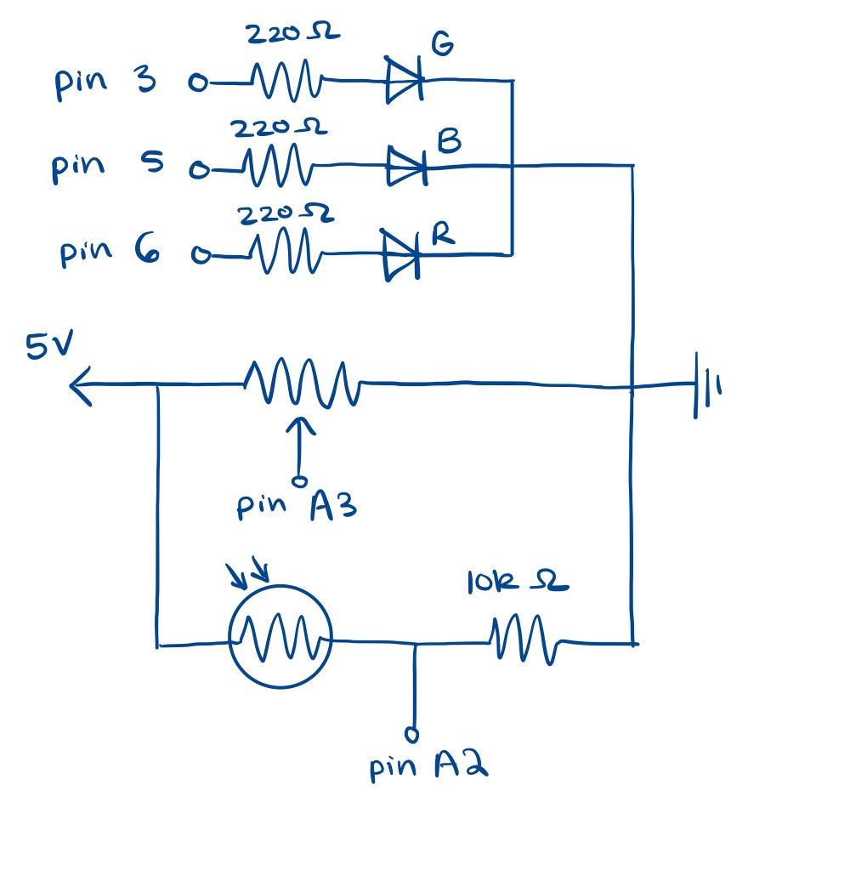
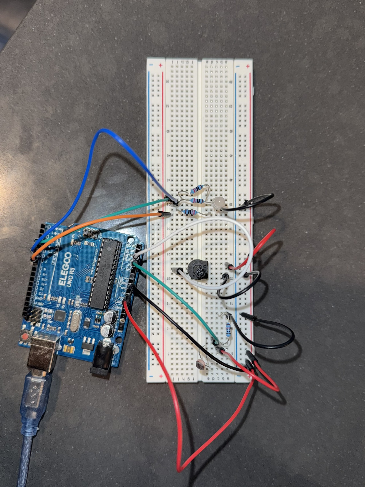

Fig 1: Circuit Schematic
Here is the schematic for my setup involving an RGB LED, photoresistor, and potentiometer.
Fig 2: Circuit Setup
I used 220 ohm resistors for each color of the RGB LEDs because (5 - 1.7V)/20mA = 165 ohm. Even though I could use a lower value resistor for the blue LED, 220 ohms works just fine. I used a 10k ohm resistor with the photoresistor to create a voltage divider circuit and to help limit the current flowing through the circuit.
Fig 3: Talking to the Web GIF

The circle in the middle of screen changes brightness corresponding to the brightness of the environment, which is detected by the photoresistor. The potentiometer on the Arduino controls the color of the webpage backround, ranging from blue to pink. The RGB sliders on the webpage control the brightness of each LED in the RGB LED.
Firmware
// defining pin assignments, won't change
const int pot = A3; // potentiometer
const int light = A2; // light sensor
const int red = 6; // red LED pin (PWM)
const int green = 5; // green LED pin (PWM)
const int blue = 3; // blue LED pin (PWM)
void setup() {
Serial.begin(9600); // initialize serial communications
// set up RGB led pins as outputs
pinMode(red, OUTPUT);
pinMode(green, OUTPUT);
pinMode(blue, OUTPUT);
}
void loop() {
// store last potentiometer and light sensor values to detect changes
static int lastPotVal = 0;
static int lastLightVal = 0;
// store potentiometer and light sensor values (0 - 1023)
int potVal = analogRead(pot);
int lightVal = analogRead(light);
// Send data only if there's a significant change
if (abs(potVal - lastPotVal) > 5 || abs(lightVal - lastLightVal) > 5) {
// send potentiometer value, separate values with a comma, send light sensor value, new line
Serial.print(potVal);
Serial.print(",");
Serial.println(lightVal);
// update last potentiometer and light sensor values
lastPotVal = potVal;
lastLightVal = lightVal;
}
// check that there are at least 6 bytes of data ("R,G,B\n")
if (Serial.available() >= 6) {
// read RGB values (0-255)
int r = Serial.parseInt();
int g = Serial.parseInt();
int b = Serial.parseInt();
// check for newline character
if (Serial.read() == '\n') {
// set RGB LED brightness
analogWrite(red, constrain(r, 0, 255));
analogWrite(green, constrain(g, 0, 255));
analogWrite(blue, constrain(b, 0, 255));
}
}
delay(20); // Prevent flooding the serial buffer
}
Webpage p5.js code
// global variables
const BAUD_RATE = 9600;
let port, connectBtn;
// stores potentiometer and light sensor reading
let potValue = 0, lightValue = 0;
// stores RGB slider elements
let rSlider, gSlider, bSlider;
function setup() {
setupSerial(); // run our serial setup function
// create a canvas that is the size of our browser window.
// windowWidth and windowHeight are p5 variables
createCanvas(windowWidth, windowHeight);
// p5 text settings
textFont("system-ui", 50);
textStyle(BOLD);
textAlign(CENTER, CENTER);
// create RGB Sliders
rSlider = createSlider(0, 255, 127); // min: 0, max: 255, default: 127
rSlider.position(20, height - 120); // position near bottom left
rSlider.input(sendRGB); // call sendRGB() when changed
gSlider = createSlider(0, 255, 127);
gSlider.position(20, height - 90);
gSlider.input(sendRGB);
bSlider = createSlider(0, 255, 127);
bSlider.position(20, height - 60);
bSlider.input(sendRGB);
}
function draw() {
// check whether the port is open, if not, then exit the draw loop
if (!checkPort()) return;
let str = port.readUntil("\n"); // read from the port until the newline
if (str.length == 0) return; // if we didn't read anything, return
let values = str.trim().split(","); // split received string by commas
if (values.length < 2) return; // if data is incomplete then exit
potValue = Number(values[0]); // convert first value to number - Potentiometer
lightValue = Number(values[1]); // convert second val to number - Light sensor
console.log("Light value:", lightValue);
// Change background based on potentiometer
let bgColor = map(potValue, 0, 1023, 0, 255); // map potentiometer (0-1023) to background brightness (0-255)
background(bgColor, 100, 200); // set background color
// Draw a circle that changes brightness based on light
let brightness = map(lightValue, 0, 1023, 0, 255); // map light sensor to circle brightness
fill(brightness); // set fill color based on light level
ellipse(width / 2, height / 2, 200, 200); // draw a circle in the center of the page
}
// Send RGB values when sliders change
function sendRGB() {
if (!port.opened()) return; // stop if port is closed
// get R, G, B values from sliders
let r = rSlider.value();
let g = gSlider.value();
let b = bSlider.value();
port.write(`${r},${g},${b}\n`); // send "R,G,B\n" to Arduino
}
// Serial setup functions
function setupSerial() {
port = createSerial();
// Check to see if there are any ports we have used previously
let usedPorts = usedSerialPorts();
if (usedPorts.length > 0) {
// If there are ports we've used, open the first one
port.open(usedPorts[0], BAUD_RATE);
}
// create a connect button
connectBtn = createButton("Connect to Arduino");
connectBtn.position(5, 5); // Position the button in the top left of the screen.
// When the button is clicked, run the onConnectButtonClicked function
connectBtn.mouseClicked(onConnectButtonClicked);
}
function checkPort() {
if (!port.opened()) {
// If the port is not open, change button text
connectBtn.html("Connect to Arduino");
// Set background to gray
background("gray");
return false;
} else {
// Otherwise we are connected
connectBtn.html("Disconnect");
return true;
}
}
function onConnectButtonClicked() {
// When the connect button is clicked
if (!port.opened()) {
// If the port is not opened, we open it
port.open(BAUD_RATE);
} else {
// Otherwise, we close it!
port.close();
}
}